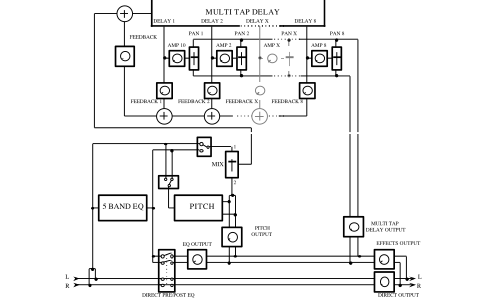
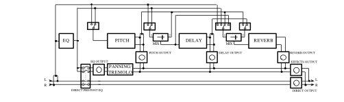
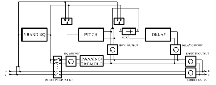
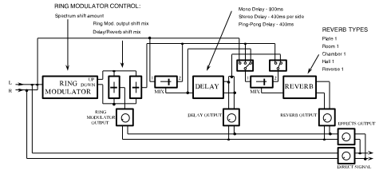
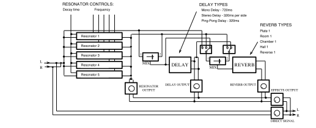

Alesis QuadraVerb Plus Users Manual Addendum
Alesis · QuadraVerb Plus
Introduction
The QuadraVerb Plus is an upgraded version of the original QuadraVerb. The many new features that are now available are made possible by a simple software update, which requires only the replacement of its EPROM (Erasable Programmable Read Only Memory). The hardware of the QuadraVerb remains unchanged.
The operation of the QuadraVerb Plus is identical to the original QuadraVerb, and all original features of the QuadraVerb are retained in the QuadraVerb Plus. All patches originally written for the QuadraVerb will sound the same on the QuadraVerb Plus. This addendum only describes the new features. Full instructions on the operation of the unit are in the QuadraVerb Users Manual.
New Features
New features available on the QuadraVerb Plus include Sampling, Ring Modulator, and Resonator configurations, plus the addition of Multi Tap Delay, Auto Panning, and Tremolo Modulation on original configurations where these features are applicable.
In addition, the QuadraVerb’s extensive MIDI implementation has been greatly enhanced to include real-time parameter control of parameters such as the Delay, Volume, and Feedback for each of the 8 individual taps in the Multi Tap Delay configuration, as well as the Auto Panning and Tremolo Modulation Speed and Depth. Also, the QuadraVerb Plus lets the user adjust parameters such as the Ring Modulator’s Spectrum Shift, Output Up/Down Mix, and Delay/Reverb Up/Down Mix, as well as the Pitch and Decay of the Resonator. This allows a greater level of creative control than before.
- Multi Tap Delay. A new type of delay available in the
5 BAND EQ→PITCH→DELAYconfiguration, where up to 8 taps can be defined. Delay Time, Volume, Panning, and Feedback Amount can be adjusted individually for each tap. - Sampling. The QuadraVerb Plus can make a brief digital recording of the input being fed to it.
- Auto Panning. A signal automatically pans from side to side (when the outputs are connected in stereo) at a selected rate and depth.
- Tremolo Modulation. An effect which automatically varies the volume at a selected rate and depth, simulating the “surf sound” tremolo found on old instrument amplifiers.
- Ring Modulator. A specialized amplitude modulator that produces an output containing only the sum and difference frequencies of its input waveforms’ harmonics. Most useful for generating metallic, bell-like sounds.
- Resonators. A resonator generates a pitch in addition to the original input signal, so a non-pitched sound can become pitched. There are 5 resonators in the QuadraVerb Plus.
Multi Tap Delay
The Multi Tap Delay is a new type of delay available in the 5 BAND EQ→PITCH→DELAY configuration. In this mode, up to 8 taps can be defined in the delay. The Delay Time, Volume, Panning, and Feedback Amount can be individually adjusted for each tap. The cumulative delay time of all 8 taps is 1500 milliseconds.
The Master Feedback control adjusts the global amount of feedback from all the taps, and the Mix Delay volume adjusts the amount of delay in the effect output. The Delay Time is relative to the previous tap, which means that when Tap #1 is delayed, all of the following taps are delayed by the same amount as well. The following illustration shows how the timing of adjacent taps behaves when a single delay time is modified (Tap 2 delay is changed from 250 ms to 500 ms in this example).
In Figure 7A, Tap #1 is set at 250 ms, Tap #2 is set 250 ms behind Tap #1 (500 ms from the beginning), and Tap #3 is set 500 ms behind Tap #2 (1 second from the beginning). In Figure 7B, an additional 250 ms is added to Tap #2, which means that it now occurs at 750 ms (instead of 500 ms as in 7A), and Tap #3 now occurs at 1250 ms (instead of 1 second in Figure 7A).
Selecting the Multi Tap Delay Configuration
Multi Tap Delay is accessed through the 5 BAND EQ→PITCH→DELAY configuration.
To select the configuration, first press the CONFIG button, then press the VALUE buttons until the display reads:
| CONFIGURATION: |
| 5BAND EQ>PCH>DLY |
The block diagram of this configuration is as follows.

Editing the Multi Tap Delay Parameters
-
To access the Multi Tap Delay parameters, press the DELAY button. The display will then read:
DELAY TYPE: STEREO DELAY Press the “Up” VALUE button until the next selection reads:
DELAY TYPE: MULTI TAP DELAY This page allows the selection of the Mono, Stereo, or Ping Pong delay (as on the original configuration) or the new Multi Tap Delay.
-
Pressing the “Up” PAGE button selects the next page, which reads:
DELAY INPUT 1: POST-EQ Pressing the VALUE buttons selects the other input choice, which reads:
DELAY INPUT 1: PRE-EQ This page selects whether the input signal to Input #1 of the Delay section is derived either before (Pre) or after (Post) the EQ. This page is also identical to the original QuadraVerb configuration.
-
Pressing the “Up” PAGE button again selects the next page, which reads:
DELAY INPUT MIX: 1<-00-> PITCH Pressing the VALUE buttons selects the mix between Delay Input #1 (which was selected on the previous page) and the second Delay input, which is dedicated to the output of the Pitch section. This page is also identical to the original QuadraVerb configuration.
-
Pressing the “Up” PAGE button again selects the Delay Tap to be edited, which reads:
TAP NUMBER: 1 Pressing the VALUE buttons selects the desired tap. The range is 1 to 8.
-
Pressing the “Up” PAGE button again selects the Tap Delay Time page, which reads:
TAP 1 DELAY TIME: 0125 millisecs Pressing the VALUE buttons selects the desired Delay Time, measured in milliseconds. The tap number selected on the previous page is displayed on the first line. If the cumulative delay time of the 8 taps exceeds 1500 milliseconds (1.5 seconds), the delay time will not be allowed to increase.
-
Pressing the “Up” PAGE button again selects the individual Tap output volume to be edited, which reads:
TAP 1 VOLUME: 50 Pressing the VALUE buttons selects the desired Output Volume. The range is 0 to 99.
-
Pressing the “Up” PAGE button again selects the individual Tap Panning to be edited, which reads:
TAP 1 PANNING: LEFT<-00->RIGHT Pressing the VALUE buttons selects the desired panning from left to right. The range is Left 99 to Right 99.
-
Pressing the “Up” PAGE button again selects the individual Tap Feedback to be edited, which reads:
TAP 1 FEEDBACK: 00% Pressing the VALUE buttons selects the desired amount of feedback. The higher the feedback value, the more repeats occur. The range is 0 to 99.
-
Pressing the “Up” PAGE button again selects the Master Feedback to be edited, which reads:
MASTER FEEDBACK: 00% Pressing the VALUE buttons selects the desired amount of feedback. This is a global parameter, scaling the feedback of all taps at once. The range is 0 to 99.
Modulating the Multi Tap Delay Parameters
The Delay, Volume, Panning, and Feedback of each tap, as well as the Master Feedback, can also be modulated by any MIDI modulation source. See Modulating the Parameters in the QuadraVerb Users Manual.
Editing the EQ, Pitch, and Delay Parameters
The parameters and mode of adjustment of the EQ, Pitch, and other Delay sections are identical to the original 5 Band EQ→Pitch→Delay configuration in the QuadraVerb Users Manual.
Sampling
The QuadraVerb Plus can make a 1.55 second sample of the input being fed to it. The maximum record time is 1.55 seconds. In playback, the sample start and length times can be altered for special effects or to trim playback to the actual start point of the sound. The sample can also be played back in its entirety (one shot) or continuously repeated (looping). Playback can be further altered by a variety of trigger sources: an incoming audio source, playback from the front panel, or a MIDI note on, note off, and note number/pitch message, which allows the sample to be played back from a MIDI keyboard.
Selecting the Sampling Configuration
Sampling is accessed through new Configuration 8. All Sampling parameters reside under the DELAY button while in the Sampling configuration.
To select this configuration, first press the CONFIG button, then press the VALUE buttons until the display reads:
| CONFIGURATION: |
| SAMPLING |
Recording a Sample
There are two ways to record a sample. In the first (the easiest way to get a good sample), the QuadraVerb Plus waits for the incoming audio to trigger recording. The second method requires the user to initiate recording by pressing the BYPASS switch on the front panel.
Recording by Audio Trigger
-
Press the DELAY button. The display will read:
SAMPLE PLAYBACK: ONE SHOT This page is primarily for playback and can be bypassed for now.
-
Press the PAGE up button three times. The display will then read:
AUDIO TRIGGER SAMPLING: OFF -
Press the VALUE button to select the Audio Trigger On mode. The display will read:
AUDIO TRIGGER SAMPLING: ON -
Now press the BYPASS button. The display will read:
WAITING FOR AUDIO THRESHOLD -
Send a signal to the QuadraVerb Plus. When the first LED (−18 dB) lights, the input signal has passed the audio threshold and recording has begun. For the best recorded signal, raise the input level control so that the −6 dB LED lights. The signal will be distorted if the red Clip LED lights.
Recording from the Front Panel
-
Press the DELAY button. The display will read:
SAMPLE PLAYBACK: ONE SHOT This page is primarily for playback and can be bypassed for now.
-
Press the PAGE up button three times. The display will then read:
AUDIO TRIGGER SAMPLING: ON -
Press the VALUE button to select the Audio Trigger Off mode. The display will read:
AUDIO TRIGGER SAMPLING: OFF -
When ready to sample, press the BYPASS button. The display will read:
SAMPLING........... For the best recorded signal, raise the input level control so that the −6 dB LED lights. The signal will be distorted if the red Clip LED lights.
Playing Back a Sample
There are three ways to play back a recorded sample: from the front panel, from an audio trigger, or through MIDI. Playback from the front panel (manual playback) is normally used when you want to trigger a recorded sample by hand. Playback from an audio trigger is normally used when replacing one audio source with a recorded sample, as when replacing a snare drum on a tape track with a better recorded sample. Playback through MIDI enables a recorded sample to be played from a MIDI keyboard.
Playback from the Front Panel
-
Press the DELAY button. The display will read:
SAMPLE PLAYBACK: ONE SHOT One Shot means that once a sample is initiated, it will play until the end of the sample and then stop.
- To begin playback, press the EQ button. The sample will play to the end and then automatically stop. To play back again, press the EQ button again.
- The volume of the sample can be increased or decreased by the OUTPUT control of the QuadraVerb Plus.
Continuous (Looping) Playback
-
If you wish to have the sample play back continuously until told to stop, press the “Down” VALUE button. The display will read:
SAMPLE PLAYBACK: LOOPING -
To begin playback, press the EQ button. The display will then read:
PUSH EQ TO STOP SAMPLE PLAYBACK -
To stop playback, press the EQ button again. The display will then read:
PUSH EQ TO TRIG. SAMPLE PLAYBACK To play again, repeat the previous two steps.
Playback from an Audio Trigger
-
Press the DELAY button. The display will read:
SAMPLE PLAYBACK: ONE SHOT -
Press the “Up” VALUE button until the display reads:
SAMPLE PLAYBACK: AUDIO TRIGGER Any incoming audio signal that passes the threshold (makes the −18 dB LED light) will cause the sample to play.
Playback from MIDI
It is also possible to MIDI-trigger the recorded sample from a MIDI keyboard. This can happen in two ways. In the first, called MIDI One Shot, when a MIDI note on is received, the recorded sample plays back to the selected end of the sample, regardless of how long the key is depressed. In the second, known as MIDI Gated, the sample stops playing when the key is released. It is also possible to select the note on the keyboard that triggers the sample at its original pitch, as well as the highest and lowest notes that the QuadraVerb Plus will respond to.
To Select the MIDI Trigger Mode
-
Press the DELAY button. The display will read:
SAMPLE PLAYBACK: ONE SHOT -
Press the PAGE “Up” button until the display reads:
MIDI TRIGGER: GATED In the MIDI Gated mode, the sample stops playing as soon as the key is released.
-
Pressing the VALUE “Down” button once selects the next display, which reads:
MIDI TRIGGER: OFF When MIDI Trigger is Off, the QuadraVerb Plus does not respond to MIDI note on/off information.
-
Pressing the VALUE “Up” button two times selects the next display, which reads:
MIDI TRIGGER: ONE SHOT In the MIDI One Shot mode, the recorded sample plays back to the selected end of the sample, regardless of how long the key is depressed.
To Select the MIDI Trigger Note
-
Press the PAGE “Up” button. The next display will read:
MIDI TRIGGER LOW LIMIT: 000 - Press the VALUE “Up” button to select the lowest desired note to trigger the recorded sample. Note number 60 = Middle C.
-
Press the PAGE “Up” button. The next display will read:
MIDI TRIGGER BASE: 060 The Base value is the note where the sample plays back with no pitch change.
- Press the VALUE buttons to select the desired note. Note number 60 = Middle C.
-
Press the PAGE “Up” button. The next display will read:
MIDI TRIGGER HIGH LIMIT: 127 - Press the VALUE “Down” button to select the highest desired note to trigger the recorded sample. Note number 60 = Middle C.
Adjusting the Sample Playback Length
In any playback mode it is possible to adjust the sample playback length in order to ignore unwanted sampled material or “dead air,” or in order to make a loop more musical.
-
Press the DELAY button. The display will read:
SAMPLE PLAYBACK: ONE SHOT -
Press the PAGE “Up” button. The display will read:
SAMPLE START: 0.00 SECONDS This page determines at what point in the sample playback will start.
-
Press the VALUE button to select the desired start time. The start can be anywhere in the sample in 10 millisecond steps. When the start of the sample is moved, the length of a loop is maintained unless the end of the sample is reached before the loop duration. In that case, the loop duration will be from the start to the actual end of the sample, regardless of the loop duration. The duration value remains intact and takes effect again as soon as the loop start permits the proper length. The range is from 0 through 1.5 seconds in 10 millisecond increments.
-
Press the PAGE “Up” button. The display will read:
SAMPLE LENGTH: 1.55 SECONDS This page determines the length of the sample playback.
- Press the VALUE button to select the desired sample length time.
Adjusting the Sample Mix Parameters
The MIX section adjusts the relative balance between the direct signal and the recorded sample playback signal.
-
Press the MIX button. The display will read:
DIRECT SIGNAL LEVEL: +50 This page controls the level of the direct signal.
- Press the VALUE buttons to select the desired direct signal level. The range is 0 to 99, with 0 being off.
-
Press the “Up” PAGE button to select the next page. The display will read:
SAMPLE PLAYBACK SIGNAL LEVEL:+00 This page controls the output level of the recorded sample.
- Press the VALUE buttons to select the desired recorded sample signal level. The range is 0 to 99, with 0 being off.
Panning and Tremolo Modulation
Auto Panning and Tremolo modulation of the EQ output have been added to the EQ→PITCH→DELAY→REVERB and 5 BAND EQ→PITCH→DELAY configurations.
Auto Panning allows a signal that has first been routed through the EQ section of either of the above configurations to automatically pan from side to side at a selectable rate. The effect is heard only when both the left and right outputs of the QuadraVerb are in use.
Tremolo Modulation means that a signal that has first been routed through the EQ section of either of the above configurations varies in volume at a selected rate. Both the depth and rate of Auto Panning and Tremolo Modulation can be varied and modulated by any MIDI modulation source.
Selecting the Panning or Tremolo Configuration
Auto Panning or Tremolo Modulation is accessed through the EQ→PITCH→DELAY→REVERB or 5 BAND EQ→PITCH→DELAY configurations.
To select either configuration, first press the CONFIG button, then press the VALUE buttons until the display reads:
| CONFIGURATION: |
| EQ>PCH>DL>REVERB |
or
| CONFIGURATION: |
| 5BAND EQ>PCH>DLY |


Editing the Panning or Tremolo Parameters
-
To access the Auto Panning parameters, press the MIX button. The display will then read:
DIRECT SIGNAL: PRE-EQ -
Press the “Up” VALUE button until the next page reads:
DIRECT SIGNAL: POST-EQ PANNING or
DIRECT SIGNAL: POST-EQ TREMOLO This page allows the direct signal to be sent Pre-EQ, Post-EQ (both with no panning or tremolo), Post-EQ with Panning, or Post-EQ with Tremolo.
-
Pressing the “Up” PAGE button repeatedly selects the Panning Depth or Tremolo Depth page, which reads:
EQ PANNING DEPTH 99 or
EQ TREMOLO DEPTH 99 depending on whether Panning or Tremolo was selected above. Pressing the VALUE buttons selects the desired amount of Panning or Tremolo Depth. The range is 0 to 99.
-
Pressing the “Up” PAGE button again selects the Panning Speed or Tremolo Speed page, which reads:
EQ PANNING SPEED 30 or
EQ TREMOLO SPEED 30 depending on whether Panning or Tremolo was selected above. Pressing the VALUE buttons selects the desired Panning or Tremolo Speed. The range is 0 to 99.
Modulating the Panning or Tremolo Parameters
The Auto Panning Speed and Depth and the Tremolo Modulation Speed and Depth can also be modulated by any MIDI modulation source. See Modulating the Parameters in the QuadraVerb Users Manual.
Editing the EQ, Pitch, Delay, and Reverb Parameters
The parameters and mode of adjustment of the EQ, Pitch, Delay, and Reverb sections are identical to the original EQ→Pitch→Delay→Reverb configuration and the 5 Band EQ→Pitch→Delay configuration in the QuadraVerb Users Manual.
Ring Modulator
The Ring Modulator is a specialized amplitude modulator that produces an output containing only the sum and difference frequencies of its input waveforms’ harmonics. It is most useful for generating metallic, bell-like sounds. The Ring Modulator in the QuadraVerb Plus creates two signals (Up and Down) from the initial input signal. The up output signal is a version of the input signal with its harmonic spectrum shifted up, while the down output signal is the input signal with its harmonic spectrum shifted down. The amount of shift is identical for the up and down outputs, and is specified in Hertz by the Shift Amount parameter.
The following illustration shows how the output spectrums relate to the input spectrum.
In Figure 1A, the fundamental (the frequency perceived as the instrument’s pitch) is 500 Hz. The harmonics are normally even multiples of the fundamental: 2 times, 3 times, 4 times, and so on. In this case, the 2nd harmonic is 1 kHz (1000 cycles per second), twice the fundamental of 500 Hz, and the 4th harmonic is 2 kHz, or 4 times the fundamental.
In Figure 1B, the Pitch Shift amount has been set to 200 Hz, which means that the fundamental and all of its related harmonics are shifted up by the same 200 Hz. The fundamental has been shifted to 700 Hz, the 2nd harmonic is now at 1.2 kHz (normally it would be 2 times the fundamental, or 1.4 kHz), and the 4th harmonic is 2.2 kHz (normally it would be 2.8 kHz).
In Figure 1C, the Pitch Shift amount is shifted down by 200 Hz, which means that the fundamental and all of its related harmonics are shifted down by the same 200 Hz. The fundamental has been shifted to 300 Hz, the 2nd harmonic is now at 800 Hz (normally it would be 2 times the fundamental, or 600 Hz), and the 4th harmonic is 1.8 kHz (normally it would be 1.2 kHz).
Since the ratio between the input signal’s harmonics is not preserved, the resulting sound is drastically different from the original. Usual ring modulators provide only a fixed mix of the Up and Down spectrums. The algorithm in the QuadraVerb Plus gives independent access to the Up and Down versions of the original spectrum. The ring modulator treatment is most valuable as a special effect on voices or sound effects.
Selecting the Ring Modulator
The Ring Modulator is accessed through new Configuration 6, RING MODULATOR→DELAY→REVERB.
To select this configuration, first press the CONFIG button, then press the VALUE buttons until the display reads:
| CONFIGURATION: |
| RING->DL->REVERB |

| Delay types | Reverb types |
|---|---|
| Mono Delay — 800 ms | Plate 1 |
| Stereo Delay — 400 ms per side | Room 1 |
| Ping-Pong Delay — 400 ms | Chamber 1 |
| Hall 1 | |
| Reverse 1 |
Editing the Ring Modulator Parameters
-
To access the Ring Modulator parameters, press the PITCH button. The display will then read:
SPECTRUM SHIFT: 1100Hz Pressing the VALUE buttons selects the desired Spectrum Shift. The range is 1 Hertz to 300 Hertz in 1 Hertz increments.
-
Pressing the “Up” PAGE button selects the next page, which reads:
RING MOD OUTPUT MIX: DOWN<-00->UP Pressing the VALUE buttons selects the desired mix of Up to Down Ring Modulator outputs.
-
Pressing the “Up” PAGE button again selects the third page, which reads:
DEL/REVERB INPUT MIX: DOWN<-00->UP Pressing the VALUE buttons selects the desired ratio of Up to Down Spectrum Shift, which can then be used as input for the Delay or Reverb. This differs from the second page in that it is possible to send a different mix of Ring Modulator outputs to the Delay and Reverb than the mix that appears in the MIX section of the QuadraVerb Plus.
Modulating the Ring Modulator Parameters
The Spectrum Shift, Ring Modulator Output up/down mix, and Delay/Reverb up/down mix can also be modulated by any MIDI modulation source. See Modulating the Parameters in the QuadraVerb Users Manual.
Editing the Delay and Reverb Parameters
The parameters and mode of adjustment of the Delay and Reverb sections are identical to the original Leslie→Delay→Reverb configuration in the QuadraVerb Users Manual.
Resonators
Instead of just processing a signal such as Delay or Reverb, a resonator generates a pitch in addition to the original input signal. There are 5 resonators in the QuadraVerb Plus. The initial resonating frequency of each resonator can be individually adjusted (tuned) on a chromatic scale. The resonator frequencies also chromatically follow incoming MIDI notes. The decay time of the five resonators can also be adjusted simultaneously.
Selecting the Resonator Configuration
The Resonators are accessed through new Configuration 7, RESONATOR→DELAY→REVERB.
To select this configuration, first press the CONFIG button, then press the VALUE buttons until the display reads:
| CONFIGURATION: |
| RESONATOR>DL>REV |

| Delay types | Reverb types |
|---|---|
| Mono Delay — 720 ms | Plate 1 |
| Stereo Delay — 320 ms per side | Room 1 |
| Ping-Pong Delay — 320 ms | Chamber 1 |
| Hall 1 | |
| Reverse 1 |
Editing the Resonator Parameters
-
To access the Resonator parameters, press the PITCH button. The display will then read:
RESONATOR GATE MODE: CONTINOUS This page determines if the resonators are gated by an incoming MIDI note on/off. If the MIDI gate is on, the input of each resonator is connected to the input signal only while its corresponding MIDI gate is on. Consequently, when a note is released, the output of the resonator driven by this note decays to zero even if the input signal is active. Pressing the VALUE buttons selects the MIDI Gated mode:
RESONATOR GATE MODE: MIDI GATED
-
Pressing the “Up” PAGE button selects the next page, which reads:
RESONATOR DECAY: 49 This page simultaneously adjusts the decay time of the five resonators. The range is from 0 through 99, with 99 being maximum decay time. Pressing the VALUE buttons selects the desired decay time.
-
The next five pages adjust the initial pitch of resonators 1 through 5. Pressing the “Up” PAGE button continually selects each Resonator page, which reads:
RESONATOR 1 TUNE +00 SEMITONE RESONATOR 2 TUNE +00 SEMITONE …and so on, up to Resonator 5. Pressing the VALUE buttons selects the desired tuning of the resonator. The range is −24 to +36 semitones, and covers 5 octaves from C1 through C6 (0 = C3).
Modulating the Resonator Parameters
The Resonator Decay can also be modulated by any MIDI modulation source. See Modulating the Parameters in the QuadraVerb Users Manual.
Editing the Delay and Reverb Parameters
The parameters and mode of adjustment of the Delay and Reverb sections are identical to the original Leslie→Delay→Reverb configuration in the QuadraVerb Users Manual.